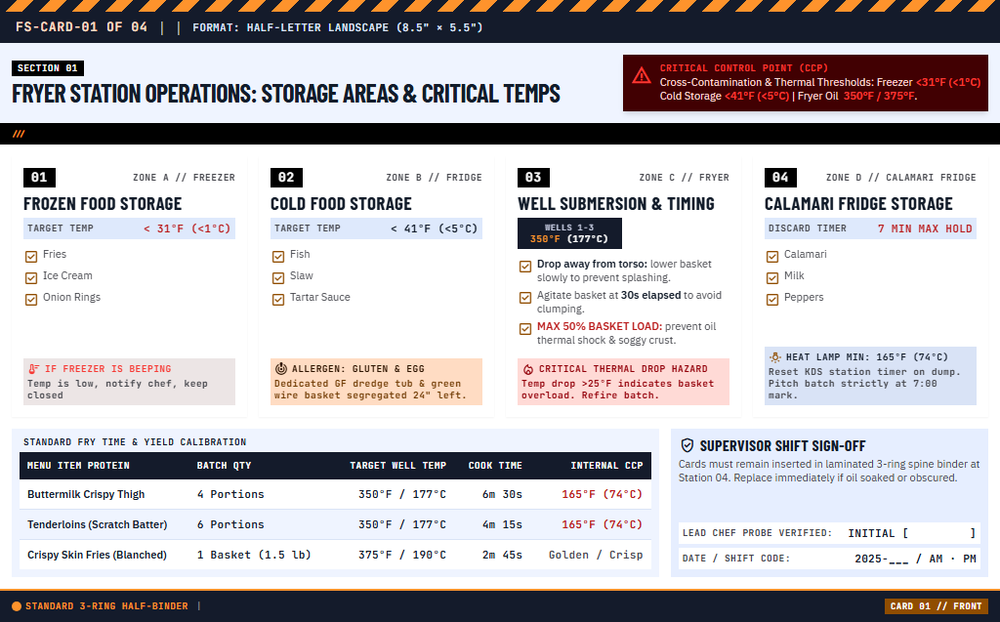
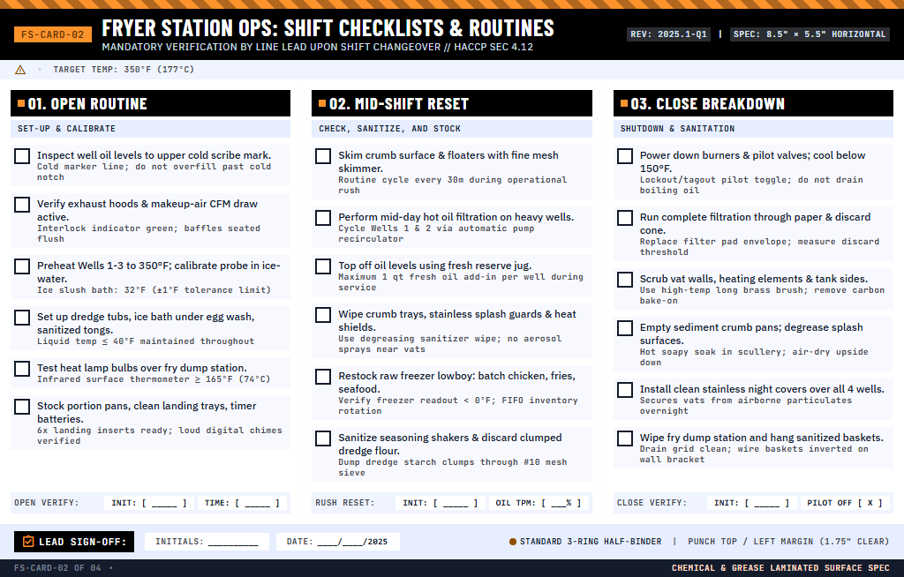
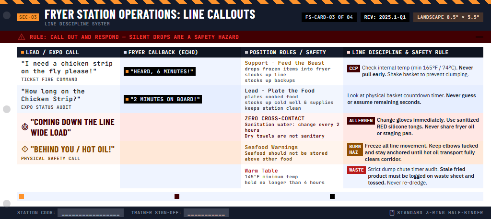
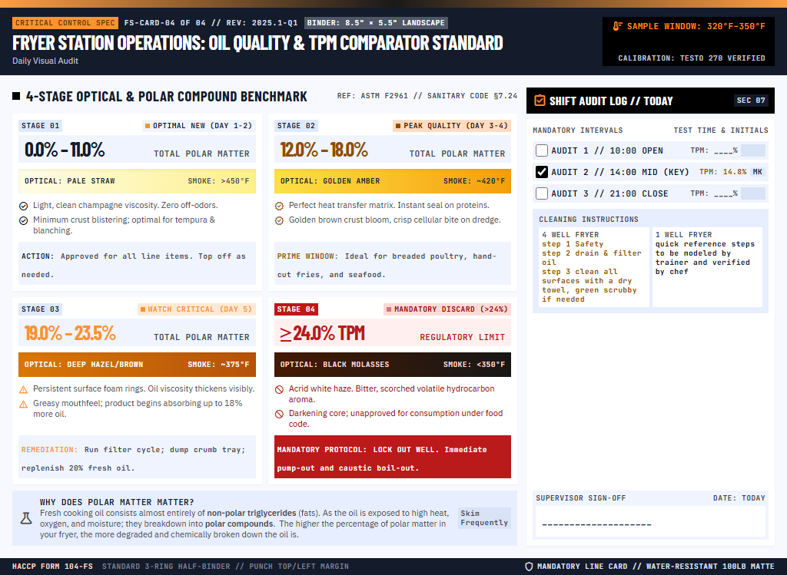
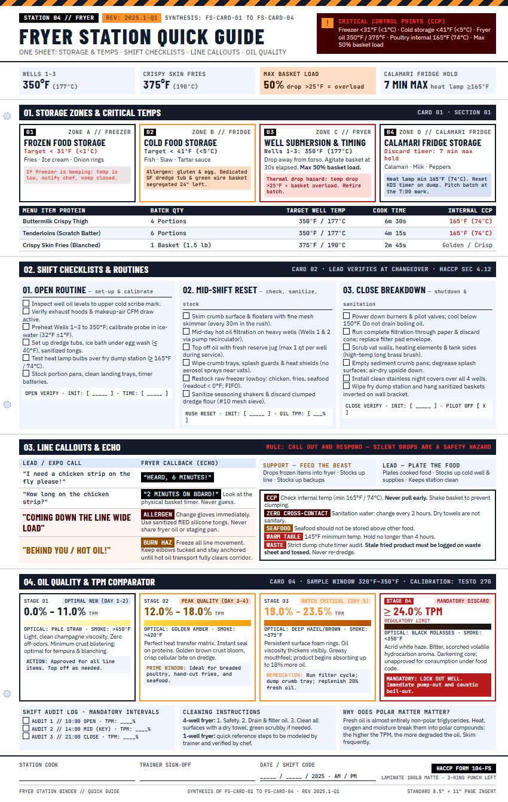

FS-Card-01 of 04
Storage & Critical Temps
Four zones: freezer, fridge, fryer wells, calamari fridge. Target temps, what lives where, the fry time & yield table, and the supervisor sign-off.
One laminated card per topic, one web page per card. Open a card, press Print, laminate it, punch it, and it lives in the 3-ring binder at the station. The same page works on a phone or a kitchen tablet, in English or Spanish.
Each page prints on its own. "Print" opens the page and the print dialog together; the paper size and orientation are already set on the page.

Four zones: freezer, fridge, fryer wells, calamari fridge. Target temps, what lives where, the fry time & yield table, and the supervisor sign-off.

Open routine, mid-shift reset, close breakdown. Eighteen check boxes with the "why" under each line, plus initials and time boxes for the lead.

What expo calls and what the fryer calls back. Support and lead roles. The CCP, allergen, burn-hazard and waste rules in one table.

Four oil stages with color, smoke point and the action for each. Shift audit log, cleaning steps for both fryers, and the supervisor sign-off.

One portrait sheet that repeats only what the four cards say: critical temps, the three routines, the callouts, the four oil stages. Nothing new is introduced here.
Use the Print button on the page, the Print link above, or Ctrl+P. Cards come out Letter landscape; the quick guide comes out Letter portrait. That is set on the page, not by you.
Paper: Letter. "Background graphics": on, so the black banners and hazard stripes print. Leave margins on the default and scale on 100%.
For the binder's half-sheet cards, print "2 pages per sheet" and cut the sheet in half, or trim a single landscape print. Laminate in 5 mil matte. Punch the left edge: the card keeps a 1.75 rem strip clear for the holes.
Every card is built from this small kit, so a grill, sauté or pantry card will look like it belongs in the same binder. The rules are strict on purpose: laminated cards get read through steam and grease, at arm's length, in two seconds.
#141b2bHeader bars, borders, banners#000000Section tags, active buttons#fe932cStripes, accents, active tab#904d00Caution text, roles#ffdcc3Allergen boxes, hold badges#410002CCP banners, allergen rows#f63a35Text on critical red#ba1a1aDiscard, waste, hazards#ffdad6Warning boxes#ffffffThe card itself#f8f9ffChecklist rows#eff4ffTable panels, notes#e6eeffSign-off panels#dee9fcMetric badges#d9e3f6Neutral callouts#d0dbedBehind the card on screen#121c2aBody copy#45464cNotes, sub-lines#76777dDividers, punch marks#c0c6dbText on ink bars36 / 38 · 800 · uppercase26 / 28 · 700 · uppercase19 / 22 · 700 · uppercase16 / 18 · 700 · uppercase14 / 18 · 50012 / 16 · 40011 / 14 · 40013 / 16 · 70011 / 14 · 6009.5 / 12 · 700Ink block, white condensed uppercase, amber square. Tops every section.
Critical red, never any other red. One per card, near the top.
Square 6 px dot, mono uppercase, zero radius. Same five stages everywhere.
18 px box, 2 px ink border, room for a grease pencil. The "why" sits under the line.
| Menu item | Batch | Well temp | Cook time |
|---|---|---|---|
| Buttermilk Crispy Thigh | 4 Portions | 350°F | 6m 30s |
| Crispy Skin Fries | 1 Basket | 375°F | 2m 45s |
Ink header, striped rows, numbers in mono and right-aligned.
Every card ends with initials, time or date. A card nobody signs is a poster.
Zones and target temps, what lives where, cook times, the calls and echoes, the hazards, the cleaning steps, the audit intervals. Only what the station lead will sign off on. A card never says more than the kitchen actually does.
Copy the prompt on the right into Claude Design (or Stitch), attach the design file below, and paste the facts where it says. It returns one HTML file that prints like the fryer cards.
Add the page to this site and the binder. Same fonts, same colors, same sign-off strip, so the whole line reads as one system.
Build a laminated training card for the [STATION NAME] station at Pelican, as a single HTML page that prints on one US Letter sheet, landscape, and looks like it belongs in the same binder as the Fryer Station cards (reference: the attached card-01-storage-temps.html and DESIGN.md).
DESIGN SYSTEM — do not change it
- Fonts (Google Fonts): Barlow Condensed for headlines, always UPPERCASE; IBM Plex Sans for body text; JetBrains Mono for labels, numbers, times and temperatures, with tabular figures.
- Colors: ink #141b2b, black #000000, hazard amber #fe932c, amber ink #904d00, amber tint #ffdcc3, critical red #410002 with #f63a35 text, error red #ba1a1a, error tint #ffdad6, paper #ffffff, surfaces #f8f9ff / #eff4ff / #e6eeff / #dee9fc / #d9e3f6, page ground #d0dbed, text #121c2a, muted #45464c, outline #76777d and #c6c6cd.
- Shapes: 0px corners everywhere. No blurred shadows; hard offsets only (3px 3px 0 #141b2b). Borders 1px or 2px ink; 3px amber or red for hazards. Hazard stripe: repeating-linear-gradient(-45deg, #141b2b 0 12px, #fe932c 12px 24px).
- Card anatomy, top to bottom: hazard stripe → ink header bar (card number "FS-CARD-0X OF 04", title, REV, format) → critical control point banner in critical red → body of 2–4 panels, each with a station banner, one metric badge and a short checklist → sign-off strip (INIT / TIME / DATE boxes) → footer with the binder spec. Keep the left 1.75rem clear for the 3-hole punch.
- Rules: one card = one topic = one side; never spill to the back. Every temperature as °F (°C). Short imperative lines. Name the critical control point. Nothing decorative.
CONTENT — use only these facts, do not invent numbers or steps
[paste the station's facts here: zones and target temps, items per zone, cook times, callouts and echoes, roles, hazards, cleaning steps, audit intervals]
OUTPUT
One self-contained HTML file: Tailwind play CDN (https://cdn.tailwindcss.com) with the attached tw-config.js loaded right after it, the Google Fonts links above, a sticky site header with a Print button (window.print()), and this print stylesheet:
@media print { @page { size: letter landscape; margin: 0.3in; } body > header, body > footer, .no-print { display: none !important; } #card { max-width: none !important; width: 100% !important; box-shadow: none !important; } * { print-color-adjust: exact !important; -webkit-print-color-adjust: exact !important; } }
Give the card wrapper id="card". Add a Spanish version of every text string as a JSON object { "English": "Español" } at the end of your answer.